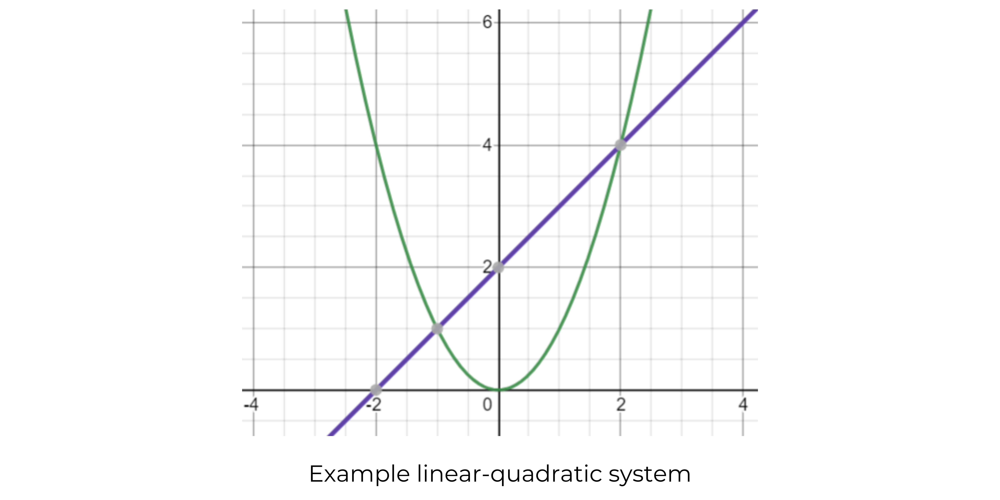
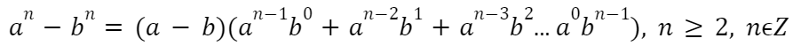
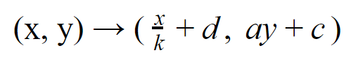

Quadratic Functions
Properties of Quadratic Functions
Quadratic functions come in the form of parabolas, which have U or ∩ shaped graphs. They have a domain of (-∞, +∞).
The standard form for a quadratic is f(x) = ax2 + bx + c, where 2 will always be the highest power of all the terms and a ≠ 0.
With quadratic functions, the second differences are always constant.
If the second differences are negative, the parabola will open downwards (∩).
If they are positive, the parabola will open upwards (U).
Minimum & Maximum of Quadratics
Every quadratic has its highest (maximum) or lowest (minimum) point, depending on its direction of opening. Both points are called the vertex of the parabola.
If the parabola opens upwards (U), it has a minimum point. This also means that the parabola's range is from that minimum point to positive infinity.
If it opens downwards (∩), it has a maximum point. This also means that the parabola's range is from that maximum point to negative infinity.
The max or min point will ALWAYS be located on a parabola's axis of symmetry. It can easily be found if the quadratic is written in vertex form, y = a(x − h)2 + k, where (-h, k)
represents the vertex of a parabola.

Inverse of Quadratic Functions
The inverse of a quadratic function takes the original function and reflects it over a y = x axis. As the textbook describes, it "undoes" what the original function does. The values of the inputs (x-values) are swapped with the values of the outputs (y-values) to now have all of the previous outputs now produce all the inputs.
If the original function is represented by f(x) = x2, then the inverse would
be written as f-1(x) = √x.
Note that not all inverses of quadratic functions are functions (meaning that some x-values may have multiple y-values or some inputs have multiple outputs). This is especially true of a parabola that opens towards the right or left.
Radicals
Radicals refer to square, cube or higher roots. They typically come in the form of n√x.
An entire radical refers to a radical with a coefficient of 1, whereas a mixed radical refers to a radical with a coefficient that is… well, not 1!
It is typically useful to simplify a radical into its mixed radical form by factoring the radicand, and
removing its common squares from the radicand and into its coefficient (ie. √12 = √(3 × 2 × 2) = 2√3).
The following rules may be useful in helping to simplify radicals or combine like terms:
Zeros of a Quadratic
The zeros of a quadratic refer to the points at which a quadratic function intersects with the x-axis. A quadratic function can have 0, 1, or 2 zeros.
The number of zeros can be determined by its discriminant, or the value of b2 - 4ac. If the discriminant is positive, there are 2 zeros.
If the discriminant is equivalent to 0, there is 1 zero. If the discriminant is negative, there will be no zeros.
Note that the discriminant is derived from the quadratic formula (shown below), where the discriminant is located underneath the square root symbol.
Families of Quadratic Functions
Quadratic function families are tied together by the fact that they have similar properties.
For instance, a group of parabolas are considered a family if they have the same vertex and axis of symmetry, but they may vary in their vertical/horizontal
compression factors or direction.
If a group of parabolas has the same x-intercepts and axis of symmetry, they are also considered a family.
Lastly, if a group of parabolas has the same y-intercepts, they are also considered a family.
Linear-Quadratic Systems
Linear-quadratic systems refers to how a linear and quadratic function can intersect at a maximum of 2 points, and these points can be found either using a graph (and estimating where the 2 functions intersect) or by using algebraic skills (ie. equating the linear and quadratic functions, before simplifying and having just 1 resultant quadratic function).
Complex & Imaginary Numbers
Imaginary numbers refer to numbers that have an "i" with them. For instance, 3i, 1.04i, etc. i represents √-1. Note that i raised to any even exponent will always be equal to -1
Complex numbers refer to combinations of real and imaginary numbers, such as 1 + i.
This is especially applicable in quadratics. Before, when the discriminant of a quadratic was negative, we'd say that there are no zeros. But now, with the concept of imaginary numbers, it'd be more correct to say that there are no REAL roots. For instance, if your discriminant was √-49, you could now write it as √49 × √-1 = √49 × i = 7i.
Difference of Ns
This is kind of like difference of squares, except instead of the exponent only being raised to the power of 2, it's raised to any power. The rule is written below.
Exponential Functions
Integer Exponents
There are a couple of key rules that are helpful to solving expressions with integer exponents
(ie. bases raised to the power of 1, -2, 400).
Note that a base that has been raised to a negative power is
always equivalent to the reciprocal of the same base (1/base) raised to the positive exponent.
It is expected that in all of the below equations, m and n represent integer values.
Rational Exponents
Any base that is raised to a rational value is equivalent to a radical.
The following rules apply to all bases with rational exponents:
Note that when solving rational exponents, one needs to be conscious of whether the root is odd or even. Odd roots may have bases that are positive or negative, whereas even roots can only have positive bases.
Properties of Exponential Functions
Exponential functions can, unsurprisingly, be represented by a graph as well.
With exponential functions, their first differences are related by multiplication, where the next point in
a graph can be calculated by multiplying the previous number by a common value.
Their general formula is f(x) = a(bx), where b ≠ 1 (since making the base 1 would cause the equation to simply look like a single dot).
With the general formula of f(x) = a(bx) + c, there are several key characteristics:
Transformations of Exponential Functions
Like all functions, exponential functions can be manipulated by horizontal or vertical stretches/compressions and shifts. In general, the following letters are used to represent the different transformations:
Once you throw those letters into the general formula for an exponential function, you'd get g(x) = ab(k(x - d)) + c (remember that b just represents the base)! Note that the coordinates of an image point after a translation (ie. if you go from f(x) = a(bx) to g(x) = ab(k(x - d)) + c, and you want to find where to original point of (0, 0) ended up on the new graph), you'd use the equation:
Here's also a helpful chart to use when finding image points, or how translation(s) affect a point on the original graph: